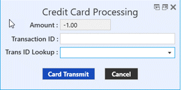

E-Payment Processing
Payments
Payments and credits are entered via the Apply section. In the past, payments entered in Adjudication served as a way of representing “manual” payments made outside of TIMS (i.e. actual payments made with third-party software or payment terminals).
Offices can continue to use payments entered in Adjudication in this fashion, but can now also choose to process the payments directly through TIMS. Please note: a Payment Options area has been added to the Apply Payments/Adjustments screen.

Steps for Manual
- In the Select Payment Source section, choose either the Payer or Patient as the payment source.
- Choose the Payment Method from the drop down field.
- In the Payment Options section, choose Manual.
- Enter the Reference Number for the transaction.
- In the Payment column of the transaction list, enter the amount to be applied to each of the transaction lines.
- When the payment has been completely distributed, click Save, or Cancel to abandon your changes.
Steps for Credit Card
- In the Select Payment Source section, choose either the Payer or Patient as the payment source.
- In the Payment Options section, choose Credit Card.
- In the Payment column of the transaction list, enter the amount to be applied to each of the transaction lines.
- When the payment has been completely distributed, click Save, or Cancel to abandon your changes.
- Swipe Card, then confirm card number.
- Click Transmit (an Approved/Denied window will then pop up).
Steps for E-Check
- In the Select Payment Source section, choose either the Payer or Patient as the payment source.
- In the Payment Options section, choose E-Check.
- In the Payment column of the transaction list, enter the amount to be applied to each of the transaction lines.
- When the payment has been completely distributed, click Save, or Cancel to abandon your changes.
- Swipe check or manually enter the Bank, Account, and Check Number. Confirm the information.
- Click Transmit (an Approved/Denied window will then pop up).
Refunds
Steps for Credit Card
- The refund process for Credit Cards and E-Checks is largely the same. Users should also note that they do not need the credit card or check information to issue a refund. TIMS has a transaction history dropdown (titled Trans ID Lookup) that will provide users with the information they need to process refunds.
- In the Select Payment Source section, choose either the Payer or Patient as the payment source.
- In the Payment Options section, choose Credit Card.
- In the Payment column of the transaction list, enter the negative amount to be applied to each of the transaction lines.
- When the payment has been completely distributed, click Save, or Cancel to abandon your changes.
- Click Yes. Then use the Trans ID Lookup dropdown menu to identify a previous Transaction ID to apply the Credit to.

- Click Transmit (an Approved/Denied window will then pop up).
E-Check
- In the Select Payment Source section, choose either the Payer or Patient as the payment source.
- In the Payment Options section, choose Credit Card.
- In the Payment column of the transaction list, enter the negative amount to be applied to each of the transaction lines.
- When the payment has been completely distributed, click Save, or Cancel to abandon your changes.
- Click Yes. Then use the Trans ID Lookup dropdown menu to identify a previous Transaction ID to apply the Credit to.
- Click Transmit (an Approved/Denied window will then pop up).